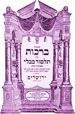
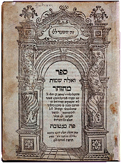

|
L'étude de la Torah est le fondement théologique du judaïsme. Haïm Brezis, Un Mathématicien juif |
En hébreu, torah veut dire Loi. Selon la tradition juive, la volonté de Dieu aurait été révélée à Moïse, sur le mont Sinaï, lorsque l'Alliance fut conclue. La Torah indique comment appliquer les commandements de cette Loi.
La Torah fait partie de la Bible hébraïque et contient les 5 premiers de ses 24 livres : La Génèse, l'Exode, le Lévitique, les Nombres et le Deutéronome. L'ensemble est aussi appelé Pentateuque par les Grecs et correspond à l'Ancien Testament chez les chrétiens.
Elle se présente sous forme de rouleaux de parchemin ; ceux-ci sont vénérés par les juifs qui les considèrent comme des Livres Saints. Chaque année, la Torah est fêtée le jour du Simhat Torah, « la joie de la Loi ».

Talmud signifie « enseignement », en hébreu. Le Talmud désigne la compilation des explications de la Torah transmises oralement à Moïse (Mishna) et leurs commentaires (Guemârâ).Ce livre, qui a constamment préservé l'unité de la diaspora juive, dépasse largement le cadre des lois et contient des réflexions philosophiques, des observations scientifiques, des récits et toutes sortes d'histoires de la vie populaire. Le Talmud de Jérusalem fut mis par écrit vers 250 après J.-C. alors que celui de Babylone fut rédigé au début du Ve siècle. Ce dernier, plus volumineux, fait maintenant autorité dans le judaïsme.
Le Yetzirah, « livre de la Création », est un des premiers ouvrages proprement kabbalistiques ; ce texte, assez court, est apparu entre le IIe et le VIe siècle. Cité par divers auteurs, son origine reste inconnue. Il expose les notions fondamentales que sont les les Sefirot et les Sentiers et présente le langage comme le constructeur du réel.
Le Sefer ha-Bahir
Le Bahir, « livre de la Clarté », serait apparu en Provence à la fin du XIIe siècle. Il se présente comme un mélange de textes écrits en hébreu et en araméen sous la forme de paraboles ou de commentaires. Parvenu en fragments, ce manuscrit est une compilation de sources gnostiques orientales. Il aborde les principes masculin et féminin ainsi que le problème du mal.

Le Zohar, « livre de la Splendeur », considéré comme le troisième Livre sacré du judaïsme, est une œuvre majeure de la Kabbale. Attribué à Moïse de León, il date du XIIIe siècle et constitue un commentaire de la Torah. Comme le Yetzirah, il s'attache à la description des attributs divins, les Sefirot. Très dense, il illustre brillamment la complexité des degrés de signification. La plupart des concepts-clé de la Kabbale y sont exposés, notamment que Dieu, par son occultation et sa dimension infinie (En-Soph) est rendu inaccessible, inconnaissable et indicible ; seuls ses attributs peuvent être appréhendés.